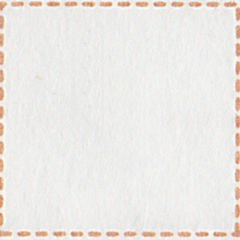

← Previous
Index
Next →
English: Who is your student?
Chinese: 谁是你的学生？
Chinese (pinyin): Shéi shì nǐ de xuésheng?
Pekzep (latin transcription): nan2 mua2 a nui2 cuk2?
Pekzep (hanzi transcription): 何汝之学人？
Pekzep (linzklā): 


Sound:
Analysis:
| nan2 | 何 | | noun-modifier | interrogative | what kind of |
| ∅ | ∅ |  | noun | implied | |
| mua2 | 汝 | | noun | | you |
| a | 之 | | subordinating particle | | ~'s ~ |
| nui2 cuk2 | 学人 | | noun | | student |